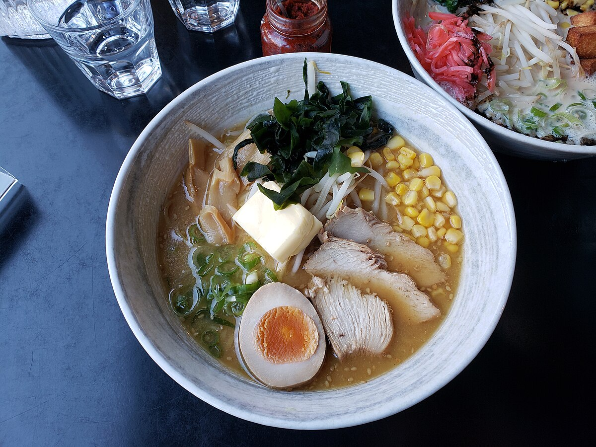

Home
Miso

Description
This recipe takes cheap ramen noodles and transforms them into something much more. It easy to make and
takes little time. A perfect meal to prepare when you need to spin something up in a hurry.
Ingredients
- Dry ramen noodles
- White Miso Paste
- Unsalted butter, melted
- Soy sauce
- Seasoned rice vinegar
- Chili Oil
Steps
- Fill a pot with 5 cups of water and bring to a boil
- Add ramen noodles to the boiling water, and cook until tender
- Drain noodles and add noodles back to the pot
- Whisk miso paste, butter, soy sauce, and rice vinegar together in a small bowl until smooth
- Pour mixture over the noodles and mix
- Drizzle noodles with chili oil